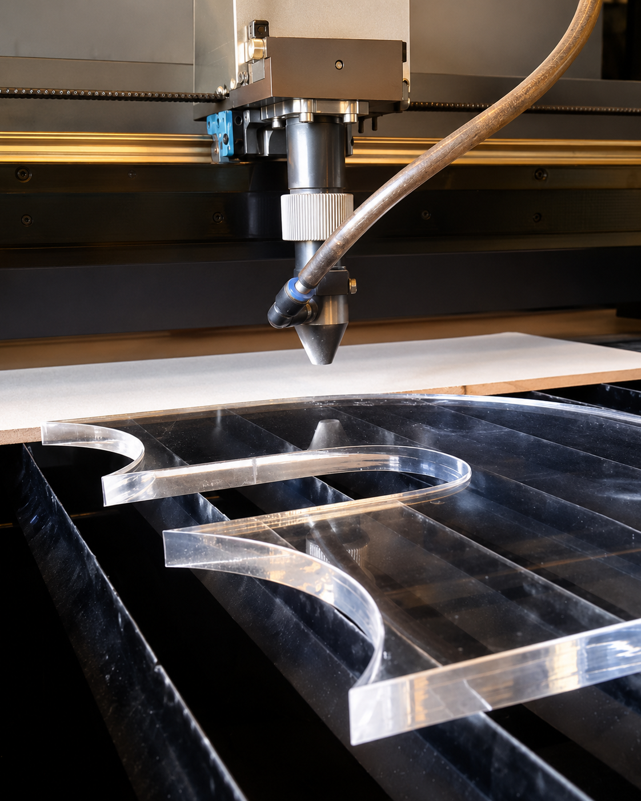
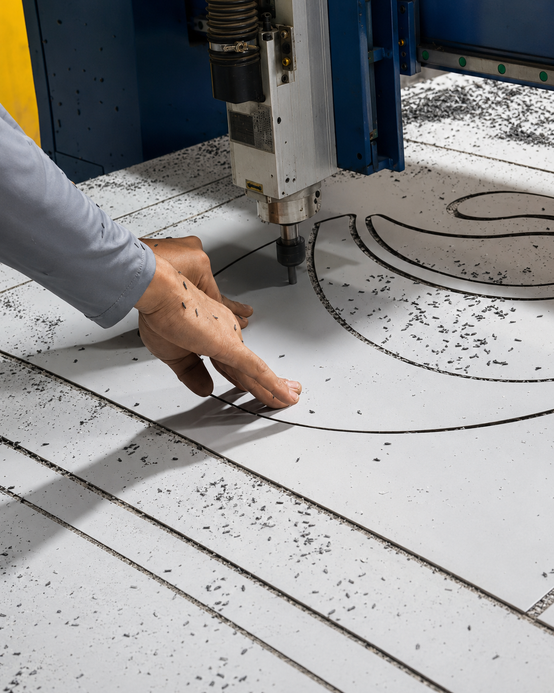
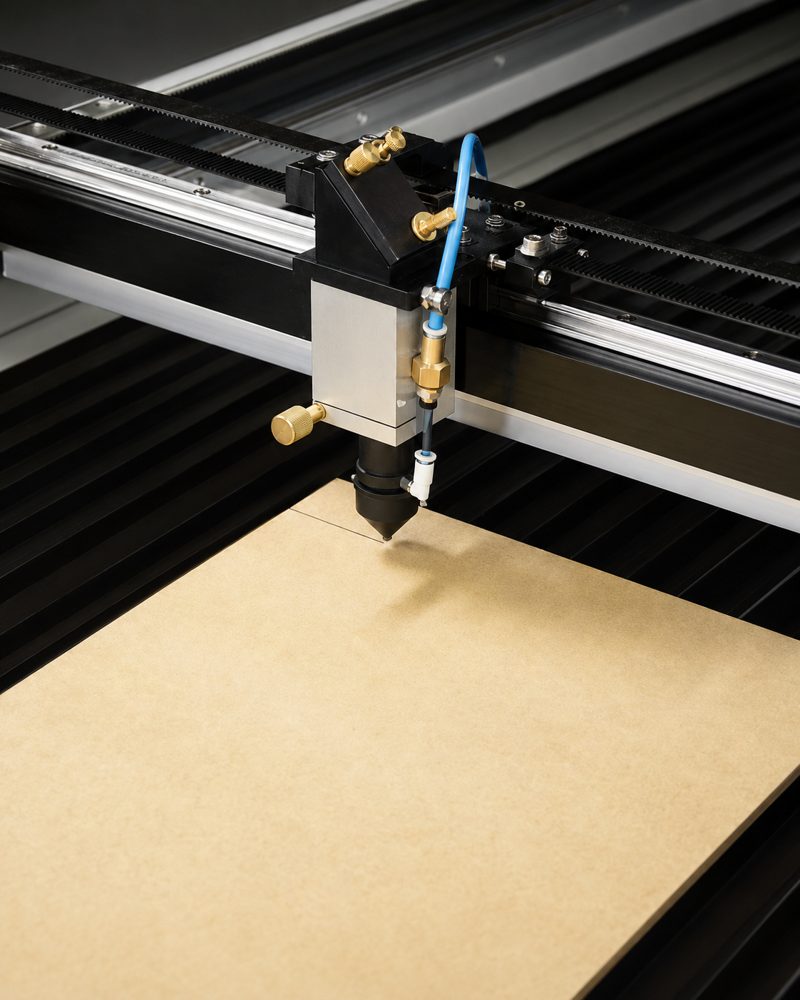
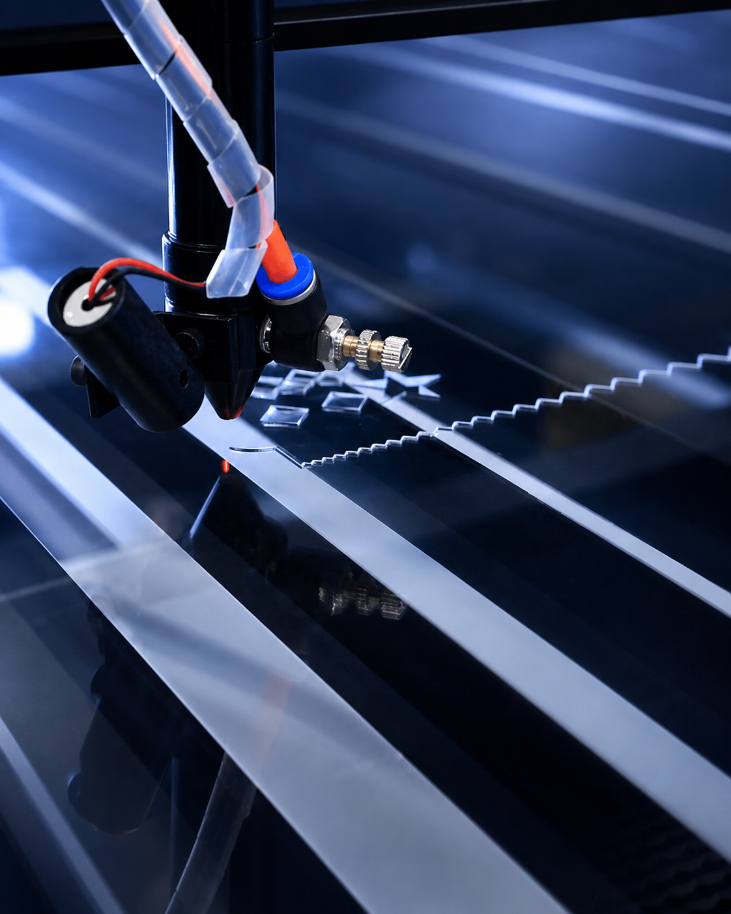
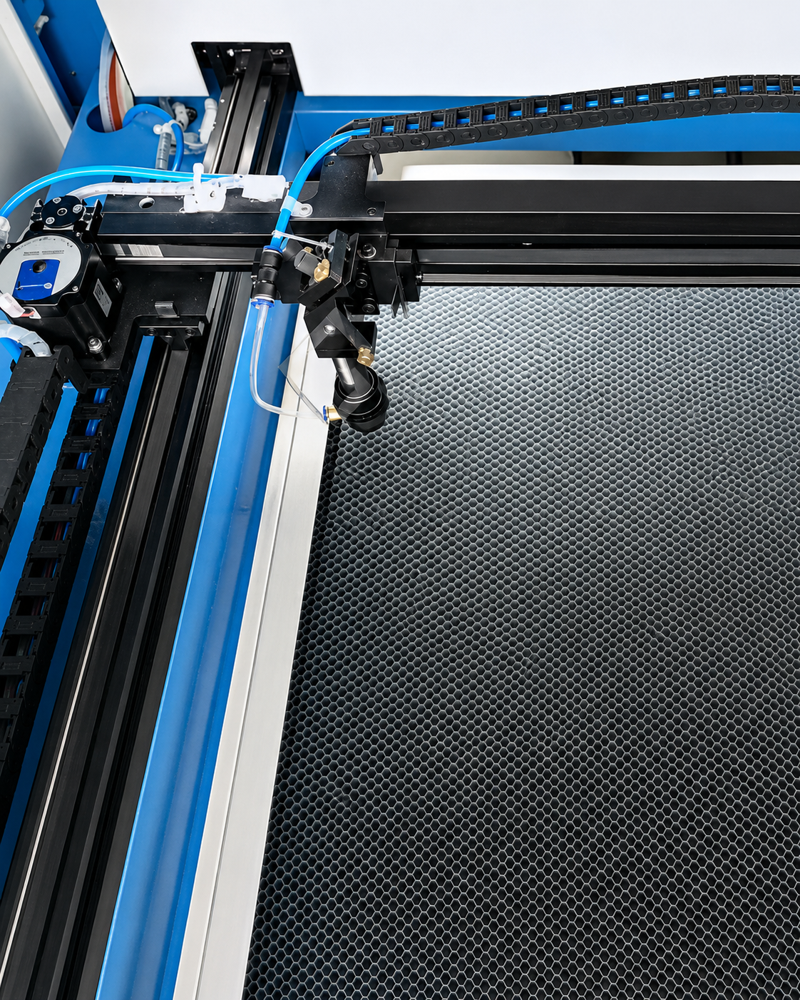
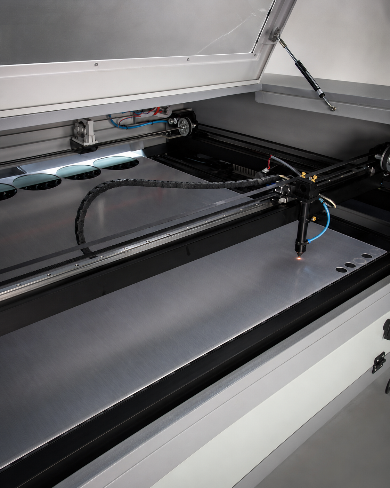

Displays e Expositores
Exposição comercial sob medida.

Aquarium Cortes Especiais
Exposição comercial sob medida.

Soluções personalizadas para marcas.

Presença visual para empresas.

Ações promocionais interativas.

Comunicação clara para ambientes.
Sobre a Aquarium
A Aquarium Cortes Especiais atua no desenvolvimento de soluções em corte, usinagem e fabricação sob medida para diferentes materiais e aplicações.
Com tecnologia, estrutura produtiva e atenção aos detalhes, a empresa entrega peças com alto padrão de acabamento, atendendo desde demandas personalizadas até produções em maior escala.
Mais do que executar cortes, a Aquarium trabalha como parceira na viabilização de projetos especiais para comunicação visual, fachadas, displays, arquitetura, marcenaria e indústria.
Cortes e acabamentos com atenção aos detalhes.
Soluções desenvolvidas conforme a necessidade de cada cliente.
Peças prontas para valorizar marcas, ambientes e projetos.

Soluções em corte, usinagem e fabricação sob medida com precisão e acabamento profissional.

Cada material exige técnica, precisão e acabamento específico para transformar projetos em peças reais.

Transparência, brilho, precisão.

Leveza, resistência, fachada.

Leveza, versatilidade, acabamento.

Estrutura, corte, acabamento.

Resistência, impacto, transparência.

Proteção, técnica, versatilidade.

Leveza, comunicação, praticidade.
Soluções sob medida desenvolvidas para marcas, ambientes e pontos de venda.

Sim. Desenvolvemos peças e soluções personalizadas conforme a necessidade, medidas, aplicação e objetivo de cada cliente.
Trabalhamos com acrílico, ACM, PVC expandido, MDF, policarbonato, PETG, PS e outros materiais técnicos sob consulta.
Sim. Produzimos peças para fachadas, displays, expositores, sinalização, letras caixa e projetos especiais para marcas e pontos de venda.
Sim. Você pode enviar imagens, medidas, arquivos ou referências para que a equipe avalie a melhor forma de produção.
Sim. Atendemos empresas, lojas, supermercados, comunicação visual, arquitetura, marcenaria, indústria e projetos promocionais.
Basta entrar em contato pelo WhatsApp, enviar as informações do projeto e a equipe retornará com a orientação necessária.